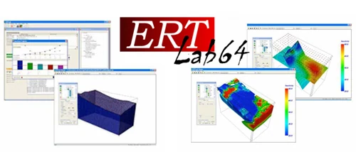
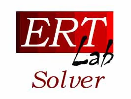
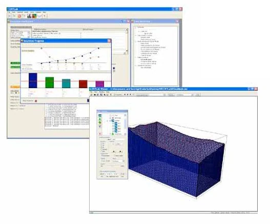
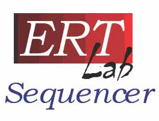
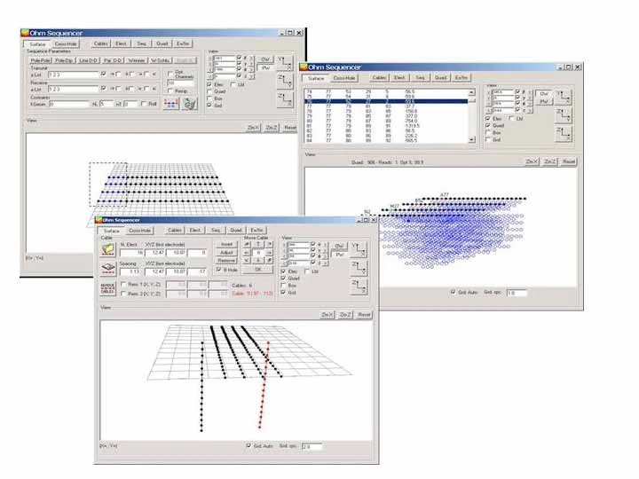
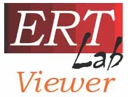
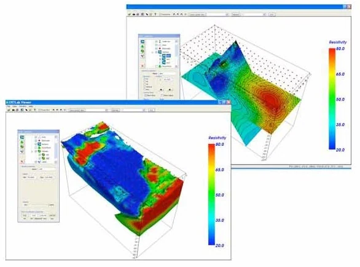
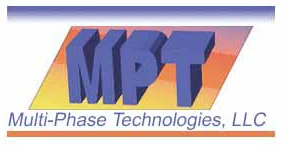
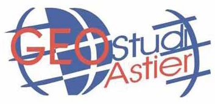

Описание
ООО «Конструкторское Бюро Электрометрии» представляет продукт совместной разработки компаний Multi-Phase Technologies, LLC. (США) и Geostudi sAtier s.r.l. (Италия)
Полностью трёхмерная инверсия с учётом топографии.
Операции с сетками большого числа электродов и измерений благодаря 64-разрядному ядру.
Многопоточная обработка обеспечивает высокую скорость инверсии.
Возможность инвертирования любой геометрии электродов: нет необходимости в регулярной сетке или в параллельных профилях, можно объединять наземные и скважинные электроды, использовать пересекающиеся кабели и электроды с разных кабелей.
Мощный инструмент создания конфигураций сеток.
Анализ чувствительности.
Отдельный инструмент ERTLab Sequencer для создания 2D/3D измерительных конфигураций, включающих наземные, скважинные, скважинно-наземные и нетрадиционные (L-формы, C-формы, петли) расстановки электродов.
Очень мощный конструктор эксперимента и инструмент инверсии данных, собранных с помощью нетрадиционных расстановок электродов: электроды могут располагаться вокруг зданий, заводов, мусорных свалок и т.д.
Отдельный инструмент ERTLab Viewer для визуализации трёхмерных моделей и разрезов сопротивлений и поляризуемостей.
Устойчивая инверсия с учётом данных о стандартном отклонении на каждой итерации с помощью алгоритма повторного взвешивания данных.

ERTLab Solver – инверсия для методов сопротивления и вызванной поляризации.

Инверсия:
Устойчивость
Контролируемые параметры
Оценка шума
Коэффициенты регуляризации
Высокая точность решения прямой задачи
Граничные условия (Неймана, Дирихле, смешанные)
Весовые функции неоднородности
Конструктор эксперимента:
Трёхмерное прямое моделирование сигналов для объединённых кабелей
Анализ и визуализация чувствительности
Интерактивное задание стартовой модели
Создание сетки:
Сложная трёхмерная топография
Пользовательская настройка сетки
Инструмент импорта/экспорта сеток и моделей
Контроль качества данных:
Построение псевдографиков
Графическая и цифровая обработки «плохих точек»
Проверка на взаимность

ERTLab Sequencer – инструмент создания 2D/3D массива расстановок (протоколов) измерения электрического сопротивления.

Задание кабелей/электродов:
Удобный интерфейс для добавления электродов и кабелей
Практичное 3D-управление добавленными объектами с помощью мыши
Задание расстановок:
Генератор расстановок для 2D/3D наземных, скважинных, скважинно-наземных наблюдений (Линейный Диполь-Диполь, Параллельный Диполь-Диполь, Поль-Диполь, Поль-Поль, Веннер, Веннер-Шлюмберже)
Специальный инструмент для создания межскважинных расстановок
Возможность создания смешанных расстановок
Оптимизация мультиканального приёмника
Расчет геометрического коэффициента
Создание взаимных квадруполей
Различные форматы импорта/экспорта (ElectreII, ErtLab Solver, text)
Псевдографики покрытия объёма среды

ERTLab Viewer– это мощный графический инструмент изображения моделей сопротивления/ВП. Визуализация инверсий и прямого моделирования в виде разрезов, объёмов или изоповерхностей. Возможность вращения и переориентации в режиме реального времени.

Изображение разрезов:
Изображение разрезов в плоскостях xy, yz, xz
Изображение разрезов вдоль любых направлений
Цветное отображение:
Переключение сопротивление/проводимость
Радужная или красно-синяя, линейная или логарифмическая, прямая или инвертированная цветовые гаммы
Дополнительные свойства визуализации:
Прозрачность
Ортогональный/перспективный вид
Задание свойств осей
Экспорт:
Экспорт в растровый формат
Экспорт в AUTOCAD
Загрузка/сохранение скриптового файла с настройками сессии
Документация и техническая поддержка на русском языке.


Технические характеристики
|
Минимальные требования: Windows 7 32bit Процессор X86 1.2GHz Оперативная память – 2Гб Свободное объем на жестком диске – 2Гб |
|
Рекомендуемые требования Windows 7 64bit Процессор intel Core i7 Оперативная память – 6Гб Свободное объем на жестком диске – 4Гб |
Комплектация и цены
Загрузки
Инструкции по эксплуатации программных продуктов ERTLab |
|
Демонстрационная версия ERTLab с ограниченным функционалом |
|
Электротомография – краткий обзор |
|

Применение
|
Создание расстановок и обработка данных для следующих электроразведочных станциях: – СКАЛА-64 (ИНГГ, ООО «КБ Электрометрии», Россия), – MPT DAS-1 (Multi-Phase Technologies, LLC, США), – Syscal (IRIS Instruments, Франция). Формат файлов для работы в ERTLab является открытым, поэтому файлы с данными электротомографии могут быть сгенерированы пользователем в стандартном текстовом редакторе. |
Галерея
Оборудование, комплектация и консультации: связаться с КБ Электрометрии.